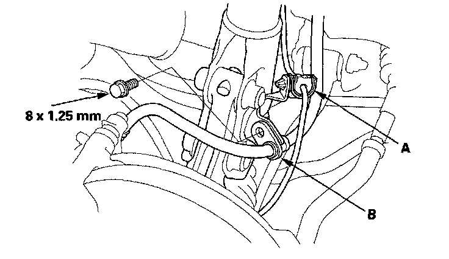
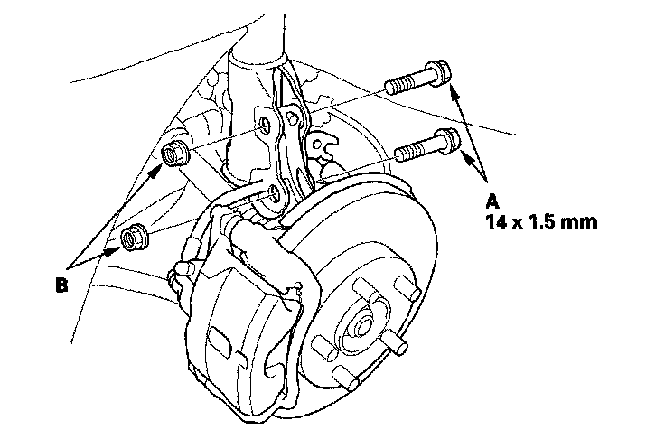
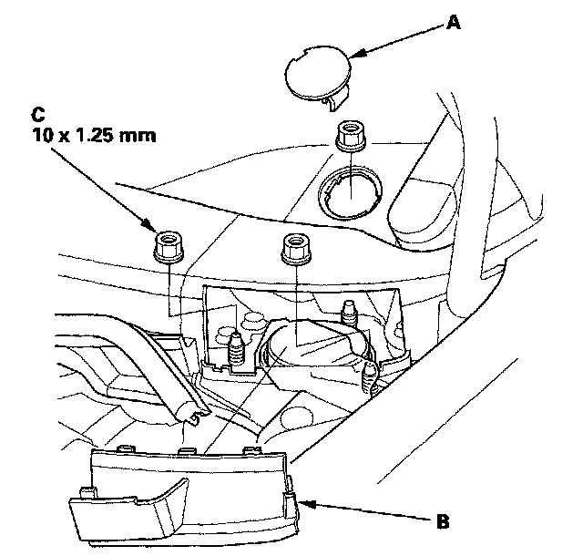
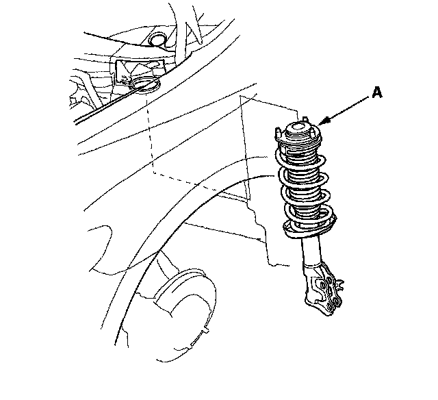
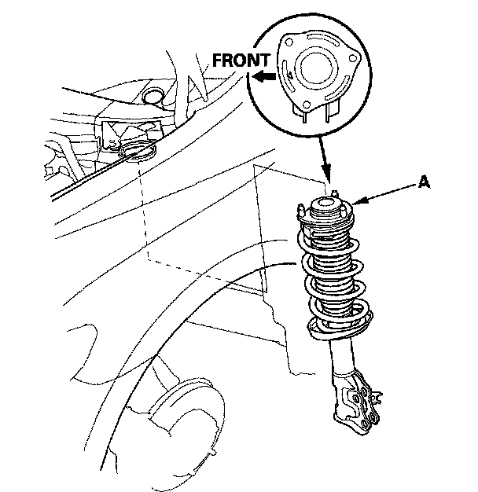
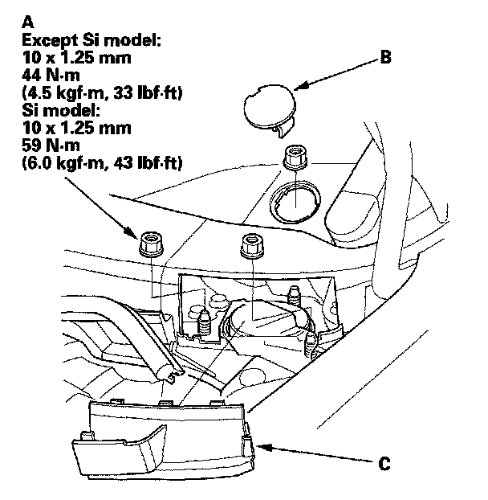
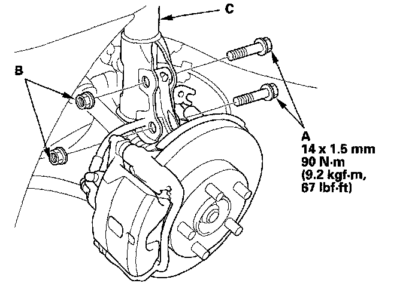
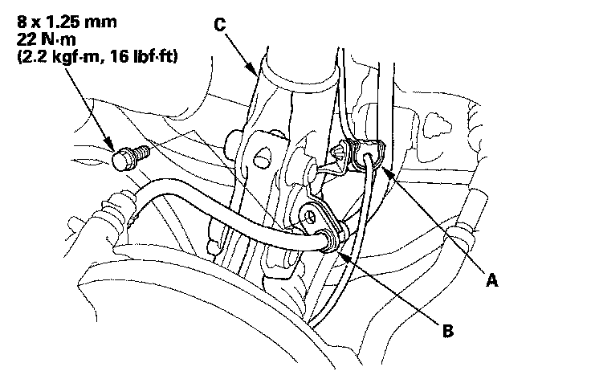

Damper & Spring Replacement
Damper/Spring Removal and InstallationRemoval
1. Turn the ignition switch ON (II), then turn on the windshield wipers. Turn the ignition switch off when the wipers are near the A-pillars.
2. Raise the front of the vehicle, and support it with safety stands in the proper locations.
3. Remove the front wheel.
4. Remove the wheel sensor harness clip (A) and the brake hose bracket (B) from the damper. Do not disconnect the wheel sensor connector.

5. Remove the damper pinch bolts (A) and self locking nuts (B) from the damper.

6. Remove the service cap (A) and the lid (B).

7. Remove the three flange nuts (C) from the top of the damper.
NOTE:
^ Damper springs are different, left and right. Mark the springs L and R before you continue.
^ Be careful not to damage the body.
8. Remove the damper assembly (A).

Installation
1. Install the damper assembly (A) onto the frame.

2. Loosely install the new flange nuts (A).
NOTE: Install the service cap (B) and the lid (C) after tightening the flange nuts to the specified torque value.

3. Loosely install new damper pinch bolts (A) and new self-locking nuts (B) to the damper (C).

4. Install the wheel sensor harness clip (A) and the brake hose bracket (B) to the damper (C).

5. Raise the front suspension with a floor jack to load the suspension with the vehicle's weight.
6. Tighten the damper pinch bolts to the specified torque value.
7. Tighten the flange nuts on top of the damper to the specified torque value.
8. Install the service cap and the lid.
9. Clean the mating surface of the brake disc and the inside of the wheel, then install the front wheel.
10. Check the wheel alignment, and adjust it if necessary.